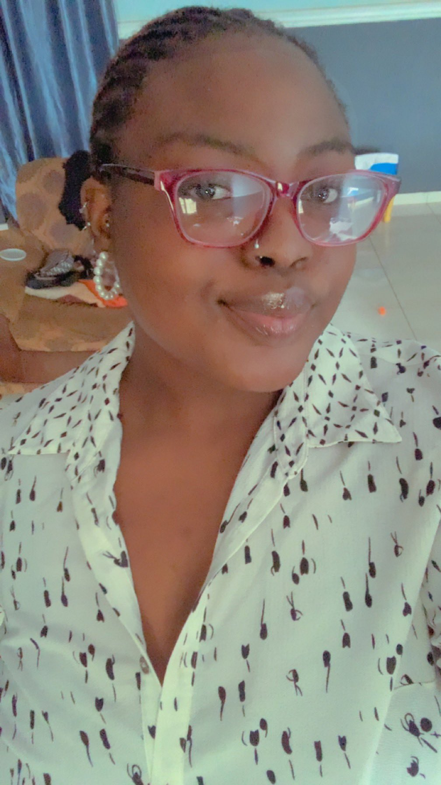

Arike Momodu

Objective
Aspiring web developer. Proficient in HTML and beginning to explore CSS.
Education
Bachelor of Science, Chemistry
Olabisi Onabanjo University, Ago Iwoye, Ogun State, Nigeria.
11/2017 - 01/2022
Work Experience
Operations Intern
God's will Technical Construction Limited, Ogere, Nigeria
- Supervised accurate mixing of recipes before production
- Operated/Monitored the Extruder Machine
- Ensured Quality Control of finished nylon products
Skills
- Customer Service
- Microsoft Office Suites
- Attention to Detail
Awards and Certifications
- Microsoft Office Specialist Master Certification(May 2015)
- Responsive Web Design, Freecodecamp (Sep 2023)
Other